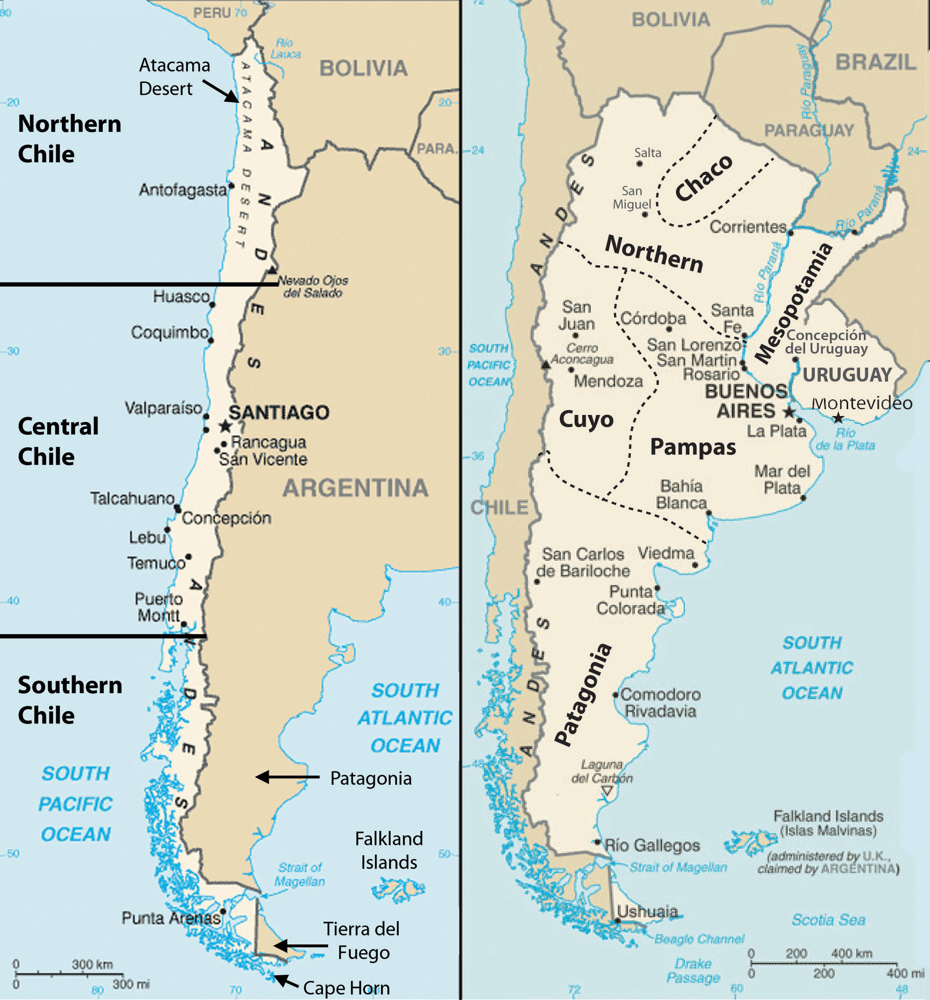
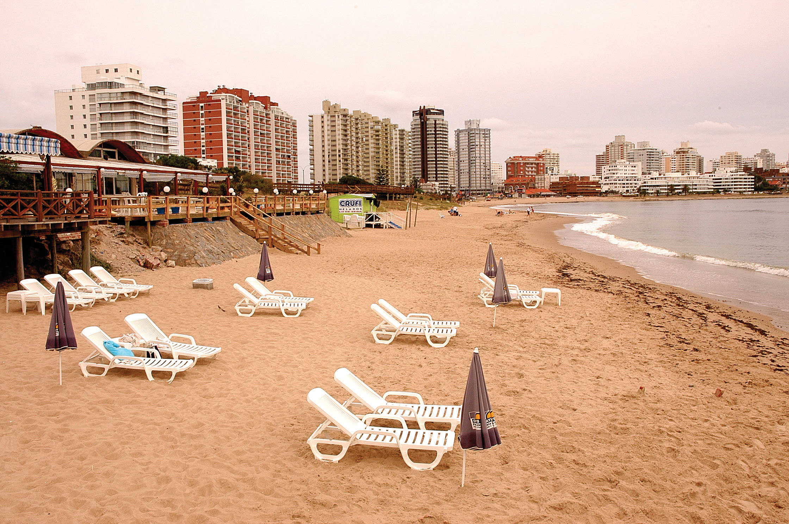
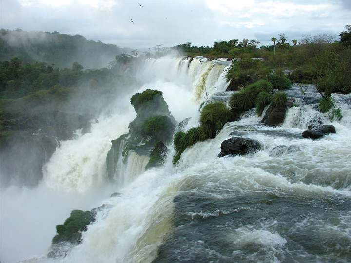
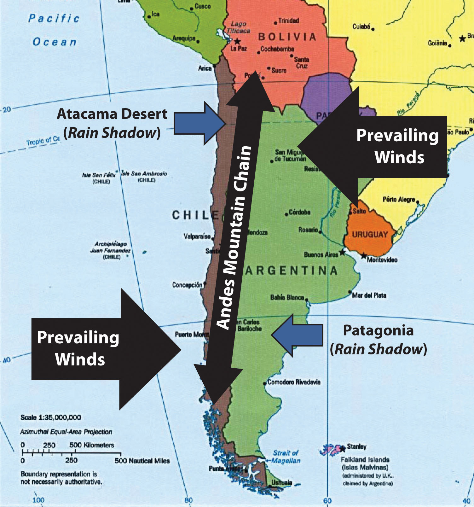
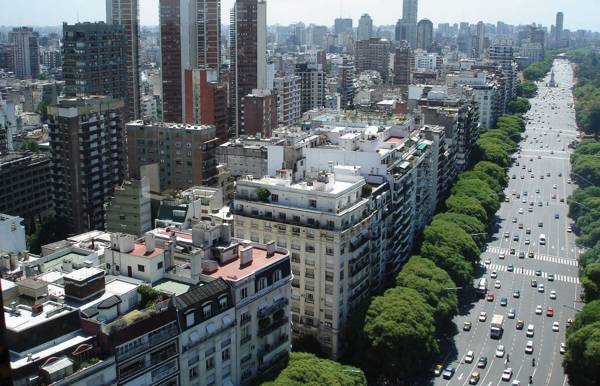
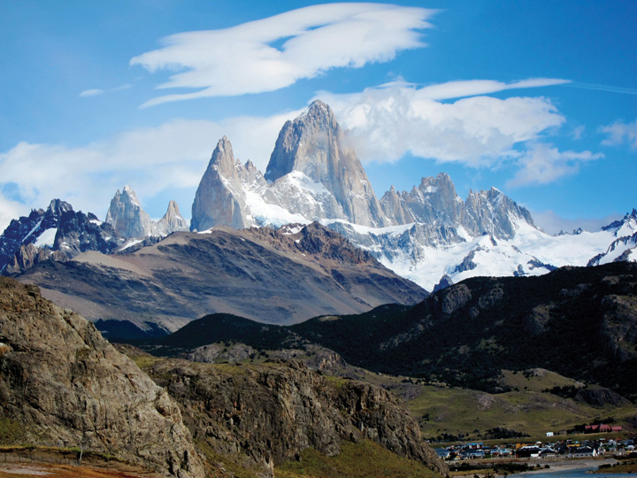
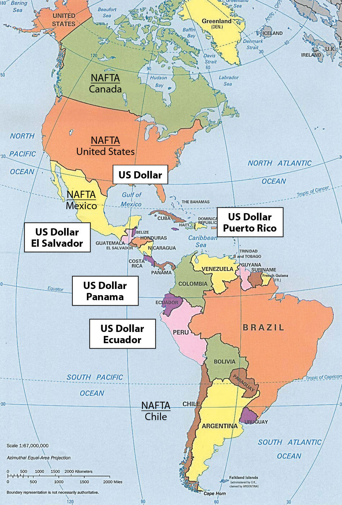

The Southern Cone region of South America includes the countries of Uruguay, Argentina, and Chile. The name is an indication of the physical shape of the southern portion of the continent. The region is located south of the tropics. The Tropic of Capricorn runs just north of Uruguay and cuts across the northern regions of Argentina and Chile. The Southern Cone has more moderate temperatures than the tropics. Type C climates dominate in Uruguay, the Pampas region of Argentina, and central Chile. The region has extremes in weather and climate. The Atacama Desert and Patagonia both have type B climates because of a lack of precipitation, which stems from the rain shadow effect of the Andes Mountains. Highland type H climates follow the Andes chain through the region and exhibit their typical pattern of warmer temperatures at lower elevations and colder temperatures at higher elevations.
Figure 6.35 The Three Main Regions of Chile (left); Argentina and Uruguay with the Regions of Argentina Outlined and Labeled (right)
Source: Updated from maps courtesy of CIA World Factbook.
The countries of the Southern Cone share similar economic and ethnic patterns. Agriculture has been a major focus of the region’s early development pattern, but today a large percentage of the population is urbanized. The European heritage of most of the population ties this region to Europe as an early trading partner. The global economy has given cause for these countries to form trade relationships with many countries. The physical geography has provided many opportunities for human activities. The mountains, plains, and coastal areas provide a diversity of natural resources that have been exploited for national wealth. All three countries have primate cities that hold a high percent of the country’s population. Primate cities are usually twice as large as the next largest city and usually are exceptionally expressive of the national feeling and culture. In this case, all three primate cities are also the capital cities of each country. The Southern Cone is an urban region with higher incomes and higher standards of living than many other parts of South America.
Uruguay is located along the South Atlantic coast bordering Argentina and Brazil. The only South American country smaller in physical area is Suriname. French Guiana is also smaller than Uruguay but remains a department of France. Uruguay has the location, natural resources, and global trade connections to provide ample opportunities and advantages for its people. The agricultural lands of the Pampas extend into Uruguay and provide for an extensive agricultural industry with livestock, small grains, vegetables, and dairy. This agricultural base has been the foundation of Uruguay’s growing economy.
Uruguay has been able to integrate itself into the global trade arena and has entered into a postindustrial development status. Postindustrial activities have included computer software development and advancements in information technologies. Uruguay is a modern and well-developed country. About 88 percent of the population is of European descent, and more than 92 percent of the population is urban. The capital city of Montevideo, a cosmopolitan city with a population of about 3.5 million, is home to about 40 percent of the population. The coastal region is an attractive place for tourists and locals who enjoy the beautiful beaches along the shores of the Atlantic.
Figure 6.36 Beachfront in Punta del Este, Uruguay
Notice the high-rise apartments and commercial buildings. Uruguay is highly urbanized and has been an attractive place for tourism.
Source: Photo courtesy of Ernesto Jorysz, http://www.flickr.com/photos/jorysz/2186231204.
Montevideo is also the location of the headquarters for Mercosur (the Southern Cone Common Market). Mercosur was created in 1991 to open trade of goods and services among South American countries and promote development within the realm. Current members of Mercosur include Uruguay, Paraguay, Brazil, and Argentina. Venezuela’s application for full membership is pending. Additional associate members of Mercosur include Peru, Ecuador, Colombia, Chile, and Bolivia. Mercosur is on a parallel path to compete with the North American Free Trade Agreement (NAFTA), the Central America Free Trade Agreement (CAFTA), the European Union, and other global trade associations.
South America’s second-largest country is Argentina. In physical area, Argentina is ranked eighth in the world. The Andes Mountains span its entire western border with Chile. At the southern end of the continent is Tierra del Fuego. Argentina is a land of extremes. Mt. Aconcagua is the highest mountain in the Western Hemisphere at 22,841 feet in elevation, and Laguna del Carbon is the lowest point in the Western Hemisphere at −344 feet below sea level. Parts of the northern region have a tropical climate; the southern region extends into tundra-like conditions with treeless plains. Argentina also claims the Falkland Islands, which are now controlled by Great Britain. In 1982, Argentina’s ruling military junta attempted to retake control of the Falklands, but the British navy halted the action in what became known as the Falklands War.
Argentina can be categorized into a number of regions that correlate roughly with the varied physical and cultural landscapes of the country. The main regions include Chaco, Northern, Mesopotamia, Cuyo, Pampas, and Patagonia. The Northern region of Argentina has one of the highest average elevations because of the Andes Mountain Ranges. The Andes ranges widen as they proceed northward to the west of Chaco and are home to fertile river valleys. The northern ends of the ranges extend into Bolivia and enter the Altiplano of the Central Andes.
The Chaco region, which is formally called the Gran Chaco, extends from northern Argentina into western Paraguay. Scrublands and subtropical forests dominate the landscape. There is a wet season as well as a dry season suitable for raising livestock and some farming. Western Chaco, which is closer to the Andes, is drier with less vegetation and is known for its high temperatures during the summer months. To the east, the Chaco region receives more rainfall and has better soils for agriculture. The agrarian lifestyle dominates the cultural heritage of this region. In the 1920s and 1930s, the Chaco region attracted a large number of Mennonite immigrants from Canada and Russia who established successful farming operations mainly on the Paraguay side of the border and also extending into Argentina.
To the east of the northern region—on the other side of the Paraná River and reaching to the banks of the Uruguay River—is the region called Mesopotamia, whose name means “between rivers.” This unique region has a variety of features, from flatlands for grazing livestock to subtropical rain forests. The most noteworthy feature is the expansive Iguazú Falls on the Iguazú River, located on the border of Brazil and Argentina. It is a series of 275 parallel waterfalls that are just short of two miles across. It has the greatest average annual flow of any waterfall in the world. Most of the falls are more than 210 feet high; the tallest is 269 feet. The spectacular Iguazú Falls is a major tourist attraction, drawing people from all over the world.
Figure 6.37 The Iguazú Falls on the Iguazú River on the Border between Brazil and Argentina
The headwaters of the Iguazú River are near Curitiba in Brazil. The river converges with the Paraná River about 14 miles downstream from the Iguazú Falls at the point where Brazil, Paraguay, and Argentina meet—called the Triple Frontier. The falls is approximately 1.7 miles along its edge, which is divided by rocky islands on both the Argentinean and Brazilian sides. The Iguazú Falls are a major tourist attraction for the region.
Source: Photo courtesy of Jeffrey Bary, http://www.flickr.com/photos/70118259@N00/2701569937.
The Cuyo region is located along the Andes Mountains in the west central part of the country. Mt. Aconcagua is located here, along with other high mountain peaks. This arid region gets most of its moisture from melting snow off the mountains, which irrigate the rich agricultural lands that produce fruits and vegetables. The Cuyo is a major wine-producing region; it accounts for up to three-quarters of the country’s wine production. Picturesque vineyards and farms make the Cuyo a favorite tourist destination in Argentina. Mendoza is the country’s fourth-largest city. Low mountain ranges form the eastern border between the Cuyo and the Pampas.
The Pampas is a large agricultural region that extends beyond Argentina and includes a large portion of Uruguay and the southern tip of Brazil. With adequate precipitation and a mild type C climate, the Pampas is well suited for both agriculture and human habitation. The rich agricultural lands of the Pampas include the largest city and the country’s capital, Buenos Aires, which is home to up to a third of the nation’s population. The Pampas provides some of the most abundant agricultural production on the planet. The western grasslands host large haciendas (prestigious agricultural units) with cattle ranching and livestock production. This area has elevated Argentina to its status as a major exporter of beef around the world. Agricultural production has been a major part of the nation’s economy. One hundred years ago, the export of food products made Argentina one of the wealthiest countries in the world. In today’s global economy, the profit margins in agricultural products are not as lucrative, and industrialized countries have turned to manufacturing for national wealth. Argentina continues to have a strong agricultural sector but has been increasing its industrial production in order to secure a strong economy.
Figure 6.38 Rain Shadow Effect
The rain shadow effect in southern South America creates the Atacama Desert and an arid Patagonia.
Source: Updated from map courtesy of University of Texas Libraries, http://www.lib.utexas.edu/maps/americas/samerica_95.jpg.
Patagonia is a large expanse of the south that is semiarid because of the rain shadow effect. This area possesses enormous natural resources, including large amounts of oil and natural gas. Deposits of gold, silver, copper, and coal can be found here. Raising livestock has been the main livelihood in Patagonia, which is otherwise sparsely populated. Patagonia includes the southern region of Tierra del Fuego and the rugged Southern Andes, which have some of the largest ice sheets outside Antarctica and many large glaciers that provide fresh water that feeds the region’s streams and rivers. Patagonia also has a number of scenic lakes. Abundant wildlife can be found along the Atlantic coast, including elephant seals, penguins, albatrosses, and a host of other species. This region demonstrates that Argentina is blessed with a variety of physical landscapes and natural resources that can help support its economy and its people.
Argentina, with a population of about forty million, is a country of immigrants and a product of the colonial transfer of European culture to the Western Hemisphere. During the colonial era, millions of people immigrated to Argentina from Western European countries such as France, Germany, Switzerland, Portugal, Greece, the British Isles, and Scandinavia. Additional immigrants came from Eastern Europe and Russia. Eighty-five percent of the population is of European descent; the largest ethnic groups are Spanish and Italian. The Mestizo population is only at about 8 percent. A small number of people from the Middle East or East Asia have immigrated and make up about 4 percent of the population. Less than 2 percent of Argentines declare themselves to be Amerindians.
Old World European customs mix with New World Latin American traditions to form a cultural heritage unique to Argentina. This cultural heritage can be experienced in the metropolitan city of Buenos Aires, where all facets of society and culture can be found. With a population of about thirteen million—one-third of Argentina’s total population—Buenos Aires is a world-class city. Argentina is an urban country: more than 90 percent of the population lives in cities. The rural side of the culture has often been characterized as the traditional gaucho (cowboy) image of the self-reliant rancher who herds cattle and lives off the land. Beef is a mainstay of the cuisine in much of the country. The urban culture includes the traditional Argentine tango with music and camaraderie in upscale night clubs. These traditional images may be stereotypes, but the cultural scene in Argentina is heavily invested in the international trends of the modern world. The cultural landscape has become integrated with fashions and trends from across the globe.
Figure 6.39 Palermo District, Buenos Aires
This photo illustrates the enormous expanse of the most populous area of Buenos Aires, Argentina.
Source: Photo courtesy of http://commons.wikimedia.org/wiki/File:Buenos_Aires_-Argentina-_136.jpg.
The people of Argentina have a good standard of living, and the country is up-and-coming on a world scale. The main problem has been the instability of the government during the twentieth century. The Argentine constitution provides for a balance of powers between the judicial, legislative, and executive divisions, similar to that of the United States. For many decades in the twentieth century, the state vacillated between a democratically elected government and military rule. The swings back and forth have been consistent and regular, which has wreaked havoc on the economy, resulting in everything from hyperinflation to brutal authoritarian rule.
An example of the national swings in Argentina occurred between 1946 and 1955, when General Juan Perón was elected president. His wife, Eva (popularly known as Evita), became a public sensation. “PeronismTemporary movement in support of Argentina’s populist president Juan Perón and his wife, Eva, in response to their concern for the poor and the working class.” started out with populous support and a shift toward improving working conditions and increasing government spending. At the same time, censorship, isolationism, and repression of civil rights were elevated to a point of social unrest. Opposition members were imprisoned or killed. Eva Perón died of cancer in 1952, and Juan Perón was eventually ousted from office and fled to Spain. He later returned from exile to gain prominence in politics once again but died in office in 1974. Other presidents came to power only to be deposed or ousted by military coups. The instability in the political arena created problems for the economic sector, which had to deal with inflated currency and an unattractive environment for foreign investments. More recently, there has been some progress in stabilizing both the government and the economy, but political instability remains a factor. Argentina has abundant natural resources, adequate infrastructure, and an educated work force. The country has all the necessary means to launch into the future with a strong economy—as long as it is able to establish a stable government and a sound economic agenda.
Chile is a long, narrow country on the western edge of southern South America. Chile is 2,500 miles long and only 90 miles wide on average. This country borders the Pacific Ocean on one side and the Andes Mountains on the other. Chile has a variety of environmental zones, administrative districts, and climate patterns. Temperatures are cooler as one moves south toward Tierra del Fuego, which is split between Chile and Argentina. Rain has never fallen in select areas of northern Chile, which includes the Atacama Desert, one of the driest places on Earth and home to one of the world’s greatest copper and nitrate reserves. The sodium nitrates found in the Atacama Desert are used in plant fertilizers, pottery enamels, and solid rocket fuel.
The climate is due to the rain shadow effect. In northern Chile and the Atacama region, prevailing winds reach northern Chile from the east and hit the Andes Mountain chain, which are some of the highest mountains on the continent. The height of the Andes causes any moisture from rain clouds to precipitate on the eastern slopes. The western side of the Andes Mountains at that latitude receives little or absolutely no precipitation, causing extreme desert conditions in the Atacama region of Chile. Southern Chile receives a large amount of rainfall because the prevailing winds at that latitude come from the west. Here the winds, which have picked up moisture over the South Pacific Ocean, hit the western side of the Andes. The air then precipitates out its moisture as it rises up the mountainsides of the western slopes of the Andes. Less moisture reaches the eastern side of the mountains, creating a rain shadow with arid and dry conditions for the region called Patagonia in southern Argentina. The Andes are not as high in elevation in the south, which allows some precipitation to fall on the rain shadow side.
Figure 6.40 Mt. Fitz Roy’s Rugged Landscape
Mt. Fitz Roy is in the Andes on the border between Chile and Argentina. The mountain range borders Patagonia on the Argentinean side in the remote region of the south. The village of El Chaltén, which is the main access to the mountain, can be seen in the lower right of the photo. The unique terrain of the mountain is often photographed but seldom climbed.
Source: Photo courtesy of Josh and Erica Olson Silverstein, http://www.flickr.com/photos/sacire/5577982949.
Chile can be divided into three regions:
Central Chile is the core region because it has a valuable port in Valparaiso and the country’s capital city, Santiago, which is also Chile’s most populous city. Central Chile is also home to more than 90 percent of the country’s population.
The people of Chile are 95 percent European and Mestizo. They have worked to establish a good education system and an increasing standard of living. The country had a relatively stable government until the 1970s when a short revolution brought a military dictatorship to power until 1989. The 1990s brought about a surge in economic development that has continued into the twenty-first century. The political situation has stabilized, and the first female president, Michelle Bachelet, was elected in 2006. The political system is faced with the unequal distribution of wealth that is common in Latin America and many other countries of the world. Half the country’s wealth is concentrated in the hands of about 10 percent of the population. About 50 percent of the population is on the lower end of socioeconomic scale. Dire poverty exists in Chile, but it is not as prevalent here as it is in the Central Andes, Paraguay, or Northeast Brazil. Chile has a thriving middle class that has made good use of the opportunities and education that Chile has offered them.
Chile is blessed with natural resources that include the minerals of the Atacama Desert, extensive fishing along the coast, timber products from the south, and agricultural products from central Chile. All these factors have brought about an emerging development boom and have attracted international trading partners. The stable government and the growing economy have successfully kept inflation low, kept employment high, reduced poverty, and brought in foreign investment. In the globalized economy, Chile has managed to work with various trading partners to increase its advantages and opportunities in the international marketplace.
Chile has been increasing its trading activities with its counterparts in the Pacific Rim in Europe and North America. Chile has an abundance of fish in its coastal waters and copper and minerals in the Atacama Desert and has been exporting timber products from its southern region. The United States is one of Chile’s main trading partners. Chile’s main commodity exports to the United States include paper, minerals, metals, and copper. Major agricultural products that are shipped to the United States include processed fruits, tomatoes, grapes, vegetables, and wines. There are several good reasons why the United States trades with Chile even though it is the farthest country from the United States in South America. International trade and the seasonal patterns of agriculture have much to do with the benefits. The seasonal variations between the northern and southern hemisphere create a balance between the two. When it is winter in the north, it is summer in the south. Each has an opposing growing season for fruits and vegetables that can complement the other. Chile is an excellent counter to the opposite growing season in the Northern Hemisphere.
If you recall Section 5.2 "Mexico" on Mexico and NAFTA, you will remember that after NAFTA was implemented, Chile was considered a “silent” partner. In 1994 during a summit meeting, the president of Mexico, Canada’s prime minister, and the US president agreed to allow Chile to join the North American Free Trade Agreement (NAFTA). Chile’s president declared his support for his country to join NAFTA. The agreement could not be completed because of negotiation approval by the US Congress. At this time Chile entered into independent free trade agreements with both Canada and Mexico. A free trade agreement was later signed between the US and Chile in 2003. Thus, Chile has free trade agreements with all three North American countries and can benefit by the mutual agreements that parallel NAFTA. In this situation, Chile is an associate trading partner and enjoys the privileges of NAFTA membership without technically being listed as a member. The United States was really looking to counter Chile’s trade with Japan and Europe. Increased trade with North America diminished Chile’s trade with the European Union or the East Asian community.
As copper and natural resource prices fluctuate, creating unstable economic conditions, Chile has been expanding into the manufacturing sector. To retain the highest value-added profits and expand its economy, Chile will have to enlarge its manufacturing sector. Today Chile produces modest quantities of basic chemicals and electronic goods. Chile’s expansion of business and commerce has been endorsed as a model of successful economic development to be emulated by other Latin American countries.
Figure 6.41 NAFTA Members and US Dollar Users as of 2010
Chile is not a full member of NAFTA but has separate free-trade agreements with all three NAFTA countries and is considered an unofficial member.
Source: Updated from map courtesy of University of Texas Libraries, http://www.lib.utexas.edu/maps/americas/americas_pol96.jpg.
Chile has strong ties to the economies of North America, but in spite of close ties with the north, Chile has retained its unique status in the Southern Cone. Chile still has its own currency even though countries with smaller economies, such as Ecuador and El Salvador, have adopted the US dollar as their medium of exchange. As of 2010, the NAFTA members of Canada, the United States, and Mexico, along with their trading partner of Chile, all used different currencies. The US dollar is the most widely used currency in the world and is also used in other Latin American countries. There has been talk of creating a similar currency within NAFTA called the Amero that would replicate the European Union’s solution, which was to create a single currency, the euro. World currencies fluctuate in value, and a stable currency would increase the capacity for creating larger trading blocs that could do business on a more even economic playing field. Chile has individual free-trade agreements with all three members of NAFTA, so any change in currency with the NAFTA countries would also affect Chile.
Identify the following key places on a map: